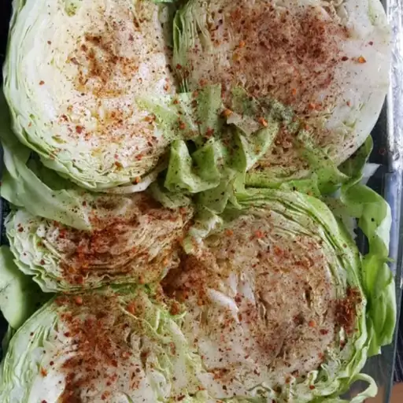

Cabbage Steaks

Description
Cabbage steaks are one of my favorite side dishes, and they are very easy to make! I personally love garlic so I go crazy with it, but put as much as is good for you. This is a very simple recipe and you can put as much or as little of the seasonings you want.
Ingredients
- 1 head cabbage
- 2 tablespoons light olive oil
- 2 tablespoons minced garlic
- ½ teaspoon salt, or to taste
- ½ teaspoon ground black pepper, or to taste
Steps
- Preheat the oven to 350 degrees F (175 degrees C).
- Cut the bottom off of the cabbage and set it so the flat end is on the cutting board; cut into 1-inch thick slices. Arrange slices in a single layer in a large casserole dish.
- Drizzle oil over cabbage slices and sprinkle with garlic. Season cabbage with salt and pepper. Cover the dish with aluminum foil.
- Bake in the preheated oven until cabbage core is easily pierced with a fork, about 45 minutes.